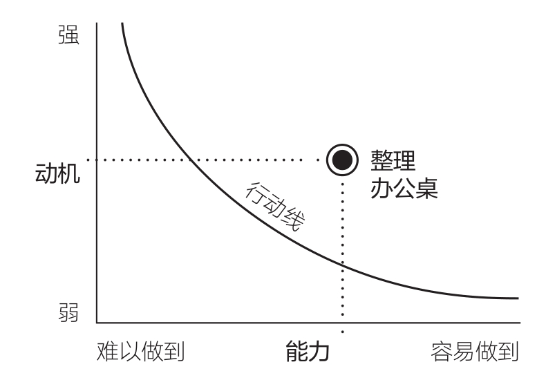
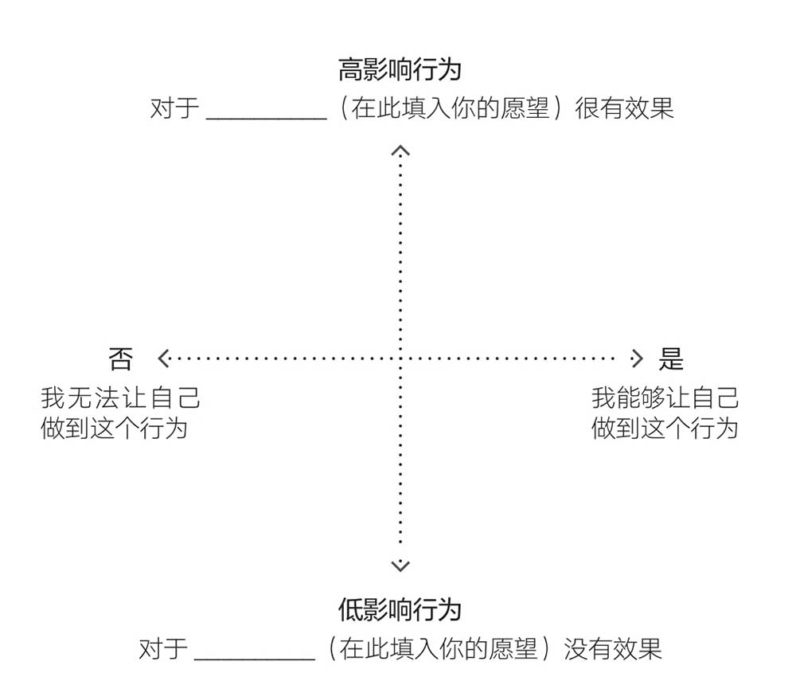

Table of Contents
福格行为模型
序
- 不只是习惯，所有行为都是可以设计的。不仅是生活中的行为可以设计，而且职场行为和组织中的行为都是可以设计的。
- 微习惯”就是让环境和小步骤（baby steps）发挥最大力量的新策略。
- 创建积极习惯是起点，而创建微小的积极习惯则是培养更大习惯的途径。只要了解了微习惯的运作原理和运作方式，就能顺利做出巨大改变
- 从小改变着手的5个原因
- 可以利用碎片时间
- 可以立刻开始改变
- 不需要担心会失败
- 一样能吃掉“大鲸鱼”
- 不需要依赖动机或意志力也能做到
- 可以利用碎片时间
影响行为的要素只有3个
- 当动机（motivation）、能力（ability）和提示（prompt）同时出现的时候，行为就会发生。动机是做出行为的欲望，能力是去做某个行为的执行能力，而提示则是提醒你做出行为的信号。
三要素齐备,行为才能发生
行为就像是不同款式的自行车，虽然外观不同，核心机制却是一样的，都是由车轮、刹车系统和脚踏板构成的

Figure 1: 动机和能力之间的关系。
- 动机越强，行为就越有可能做到
- 行为越容易，就越有可能成为习惯
- 动机和能力要像队友一样密切配合
- 如果你只拥有行为要素的其中一项，并且强度不足，那么你就需要拥有其他的行为要素，让它们彼此互补
- 对于大多数的行为来说，如果不断重复，就会更容易做到
- 如果你只拥有行为要素的其中一项，并且强度不足，那么你就需要拥有其他的行为要素，让它们彼此互补
- 没有提示，任何行为都不会发生
- 你几乎可以设计任何行为，大多数你不想要的行为也都可以停止
- 你几乎可以设计任何行为，大多数你不想要的行为也都可以停止
理解行为,就能影响行为
只要对行为的运作模式有了清晰的认识，你就能解读自己和他人的行为了，这是一项很强大的技能。你可以开始培养好习惯、戒掉坏习惯，进而理解他人不甚如意的行为。
解决行为问题的3个步骤
- 你可以遵循如下步骤，按顺序逐个尝试。如果第一步没效果，那就到下一步，依此类推。
- 检查有没有行为提示
- 检查有没有行为能力
- 检查有没有行为动机
- 检查有没有行为提示
用福格行为模型观察世界
- 从现在起，你要带着好奇心、保持一定距离去观察你的行为，就像科学家观察培养皿内的情况那样
- 动机猴子诓骗我们设下不合理的目标。有时候它确实也能帮助我们发挥出高水平，但在我们最需要它的时候，却往往不起作用
要素1,动机,找到行为愿望的黄金行为
明明拥有动机却还是无法改变的5个原因
动机很复杂
- 动机是什么:动机是完成某个特定行为（晚上吃菠菜）或某类行为（每晚吃蔬菜和其他健康食品）的欲望
- 事实证明，人物（person）、行动（action）和情境（context）是理解人类行为的基础
- 一种行为的动机可能不止一个来源。我将这些不同的动机视为推动你接近或远离某个行为的力量
动机冲上顶峰后会迅速回落
- 强烈的动机非常适合去做一次就能完成的真正困难的事情
- 在行为设计领域，我们将动机短期激增的现象称为动机波浪
动机波动十分频繁
将动机用于追逐抽象概念无法产生结果
- 愿望是改变人生的绝佳起点。
- 拥有梦想和愿望都是好事，宣传健康意识也是好事。但把时间和精力用在激励自己或他人追逐 不明确的概念 上，则是错误的举动。
仅凭动机无法实现长期改变
- 如果只关注动机，就会忽视另外两个行为要素：能力和提示
- 在福格行为模型的3个要素中，动机是最不可预测和最不可靠的
- 我希望你能够理解，想获得持久的改变，仅靠动机是不够的，因为你多半无法维持它，也可能无法对它进行可靠的操作或设计。你要明白，这不是一种性格缺陷，而是人的本性。不要掉进动机猴子的陷阱，你必须想方设法绕开它们
明确愿望与列出行为集群
行为设计的步骤
❶ 明确愿望
❷ 探索行为选项
❸ 为自己匹配具体行为
明确愿望
- 愿望是抽象的欲望
- 人们不会自发地从行为角度来思考自己要做的事，几乎每个人都有这种错误倾向。人们在讨论愿望或成果时，会使用“目标”一词
- 行为设计的词汇表里没有“目标”一词。使用“愿望”或“成果”会更明确。
- 明确愿望有助于对真正想做的事进行有效的行为设计。也许你以为自己的愿望是“更加专注”
列出行为集群,探索行为选项
- 我创建了一个可以帮助人们探索行为选项的方法，并称之为行为集群（Swarm of Behaviors，或称B群）。它的原理是这样的：在图中间的云朵里写下愿望，然后在它周围的文本框里填入具体的行为
焦点地图

Figure 2: 焦点地图
- 在绘制焦点地图的第一回合，先不必考虑行为的可行性或现实性，只考虑行为的影响程度就好。
- 第二回合要关注的重点是行为的可行性和现实性
- 行为设计强调了这样一个事实： 持久改变的关键，在于为自己匹配真心想做的行为
- 作者的行为设计方法与其他方法最大的不同，就在于其方法能让你聚焦于你已经有动机去培养的习惯
- 要想进行持久改变，匹配自己想做的行为至关重要，所以，这一步在我的行为设计中拥有特殊地位，而其中的关键是遵循： 福格原则1，即帮助人们做他们已经想做的事x
- 通过行为设计匹配的新习惯，是我们在最忙碌、最没动力且状态最不好时，也能做到的行为。如果你觉得自己在最累的时候也能做到这个行为，那它可能和你非常匹配，甚至是一个黄金行为。
要素2,能力,让行为简单到随时都能做
- 动机猴子喜欢怂恿我们采取大行动，却在我们遇到困难时离弃我们
- 小改变也许没那么吸引人，但它是一种可持续的成功
- 很多人在培养这些习惯时都有可能陷入动机暴涨暴跌的循环，进而感到焦虑和沮丧,每一个陷入动机怪圈的人，情绪都复杂多变
容易做”分析，在能力范围内找到行为
- 动机是不可靠的，但能力很可靠
- 设计新习惯，其实是在设计其持续性。其中的关键在于简单，就像我对学生所说的那样：简单改变行为。
- 你有没有想做却没有做的能改善健康状况、效率和心智的事情呢？你为什么没有做到呢？你可以做到，办法就是：提出探索型问题，识别能力链的薄弱环节，然后集中精力解决问题
实现“容易做”的3种方式
- 提升技能
- 获取工具和资源
- 让行为变得微小
只要足够简单，就能实现改变
- 我在数百万人日常使用的电子产品中发现了一个清晰的模式：大物始于小
- 刚推出就附带一大堆功能和复杂体验的产品，大都会自取灭亡。
- 我鼓励人们将这种模式应用于自己的生活：大物始于小，培养习惯也是同样的道理——从小处和简单着手。习惯成自然，就会深植于生活，并自发成长。
- 简单才有可能彻底改变行为。
- 关于拖延，请牢记一点：对困难的感知和实际的困难程度一样重要。一件事只要一天没有完成，就会让你多惦记一天，而且会让你感觉它越来越难
- 降低行动的门槛，可以让大脑活跃起来。写下电话号码并非难事，我觉得自己能够做到。一旦我这样做了，就朝着做出完整的行为迈出了关键一步
要素3,提示,善用锚点时刻让行为立即发生
- 为你想做的行为设计出“对”的提示。这一点很重要。不要把提示交给运气。
- 设计提示是一种可以学习掌握和练习的技能。
生活中常见的3类提示
- 人物提示:这类提示依靠的是你的内在去完成行为。身体的本能就是最自然的人物提示
- 靠记忆来确保自己每天完成新行为，是不大可能带来持续的改变的
- 靠记忆来确保自己每天完成新行为，是不大可能带来持续的改变的
- 情境提示:
- 行动提示:
- 相比于人物提示和情境提示，行动提示的效果是最好的，我还给它取了另一个名字：锚点
- 相比于人物提示和情境提示，行动提示的效果是最好的，我还给它取了另一个名字：锚点
设计“对”的提示的3个步骤
步骤1，确定你的锚点
- 锚点必须是生活中一定会发生的事情
- 锚点一定要明确，模糊的锚点（如“晚饭之后”或“当我感到有压力之后”）没有用。我之所以称之为锚点时刻，就是因为它意味着一个确切的时间点
- 确定锚点时有3个方面可以考量
- 匹配物理位置
- 匹配频率
- 匹配主题/目的
- 匹配物理位置
步骤2，用试验将锚点与黄金行为联系起来
步骤3，利用“最后动作”优化锚点
在日程中找到最佳锚点
为自己设计“顺便习惯”
- 这种碎片时间人人都有：等红灯的时间，在杂货店排队的时间，浇花时间。与其在这些时间烦恼或胡思乱想，不如将它们当作锚点时刻，来培养新习惯。
- 每天的通勤时间她都会听书。有了顺便习惯，布里塔妮现在每个月至少能听5本书，床边的书堆也不再是她的压力之源。
给用户的最佳提示
珍珠习惯”，管理压力与焦虑
- 我将这些习惯称为“珍珠习惯”(Pearl Habit)，因为它们的本质是将原本惹人厌烦的事情，转化成美好的提示
- 用他人的行为来提示自己做出正向而非自我挫败的行为，在感到无助时不失为一个好主意
创造积极情绪,将行为固化为习惯
- 感觉良好是微习惯策略的重要组成部分
- 当我们有效地进行庆祝时，大脑里的奖励通路会被激活。通过在恰当的时刻为自己创造良好的感觉，你能促使大脑识别并铭记刚才所执行的一系列行为。换句话说，你可以依靠庆祝和自我强化来“搞定”大脑，从而养成习惯
行为设计，本质就是情绪设计
- 一系列的积极体验可以强化新行为，让人形成习惯性的反应
习惯来自让你感觉美好的情绪
- 一个人做出某种行为时的感受和他未来再重复该行为的概率，两者之间存在直接关联
- 情绪创造习惯。无须一味重复，无须讲究频次，无须盼望奇迹，只需积极的情绪。
- 我们来思考一下Instagram是如何利用情绪来培养用户黏性的
- 只需一次体验。大多数情况下，要把决策过程逐渐变成习惯需要更多的时间，但有了积极的情绪结果会很不一样。
- 通过有意地创造积极的感受，并将其融入我们真正想拥有的习惯。当我们侵入大脑里的行为路径时，就打开了通往人类关于学习和改变的惊人潜能的大门。我们有机会使用大脑机器，去感受美好，改变行为。
用庆祝滋养你的“习惯花园”
庆祝的原则，“及时又简单”
- 福格原则2：帮助人们感受成功
- 那些发展迅速的产品或服务在这方面都做得很好。它们帮助我们感受到了成功
- 它唯一的规则就是你必须说出点什么（在心里或真的说出来都行）或做点什么，任何能让你感受良好并产生成功的感觉的语言或动作都可以
庆祝小事，迅速感受到成功
- 接受和尊重小事的重要性就是我们为成功做出改变的必然选择
固定习惯需要反复演练
- 为了快速固定习惯或帮助自己记住要执行习惯，你需要反复演练行为序列（锚点结合新习惯），然后立刻庆祝，之后重复7～10次。
打一场“庆祝闪电战”
- 如果你只能从这本书里学到一样东西的话，我希望是：为你的微小成功而庆祝。即使你觉得自己一时之间还无法摆脱困境，生活中的小小改变也能够产生巨大的影响力。庆祝可以成为你的救生绳。
高频率小成功 让小改变自然生长
从想改变的地方开始，逐渐感受成功
- 当你因为某事而感受到成功时，即便是非常微小的成功，你的自信心也会迅速增强，再次执行习惯、做出相关行为的动机也随之增强。我称之为“成功的动能”。更令人惊讶的是，造就这种动能的是你获得成功的频率，而不是成功的大小
- 从你想要改变的地方开始，逐渐让自己感受到成功。接着你只需要相信这个过程，期待改变发生。
- 作者的关键观点:“人们在感觉良好而非感觉糟糕的状态下才能获得成效最佳的改变”
掌握技巧，变身“习惯忍者”
技巧1，行为加工
- 行为加工技巧的关键在于：知道自己一次能养成多少新习惯，以及何时能增加更多。
- 如下是一些行为加工的指导方针：
- 专注于你感兴趣的事物。有些人喜欢养成一些简单的小习惯，有些人则喜欢攻克更有挑战性的习惯。哪一种更有意思、更让你激动，那就是你应该做的事
- 拥抱多样性。你一开始使用的技巧越多种多样，就能越快地学会改变的技巧
- 保持灵活性。如果你想创建一个理想的习惯清单，记住不要太拘泥于这个清单
- 专注于你感兴趣的事物。有些人喜欢养成一些简单的小习惯，有些人则喜欢攻克更有挑战性的习惯。哪一种更有意思、更让你激动，那就是你应该做的事
- 如果这个过程让你感觉很乐观，并且能越发清晰地看见前进的路径，那你就做对了
技巧2，自我洞察
- 其关键在于：知道哪些新习惯对你有意义。“对你”这两个字很重要，因为“哪个习惯更重要”这个问题对于不同的人来说答案也是不同的
技巧3，循序渐近
- 清楚自己的舒适区边界在哪里可以帮助你养成更复杂或难度更大的习惯，而不会因为感到力不从心的痛苦或沮丧而削弱习惯。
- 专注于当前的舒适区边界，这样你才能做出最英明的抉择
技巧4，情境设计
- 其关键在于：重新设计情境使习惯更易于执行。这项技巧对于维系已经实现的改变来说是至关重要的。
技巧5，心态调整
- 如果为成功而庆祝是最重要的心态调整技巧，那么其关键就在于：拥抱新身份。
- 成功接受自己在一个领域内的身份转变，往往也能够促成你在其他领域的身份转变
行为系统改变方案,一次只解一个结
- 我建议不要用“打破”，而是用一个别的词和一个隐喻：想象一条缠在一起、打满了结的绳子，压力过大、看屏幕时间过长和拖延等习惯就是这条绳子上的结。你无法一次解开所有结，并且从长远来看，紧拉绳子可能会让情况变得更糟。你必须逐一解开这些结，而且不需要一开始就专攻最难的部分。为什么呢？因为最难解的结是隐藏最深的，你必须有所规划，先找出最容易解开的结，从它开始。
- 坏习惯和好习惯的基本要素并没有本质性不同，行为就是行为，它始终是动机、能力和提示这3大要素同时作用的结果。你要承认这一点。
行为改变系统方案的3个阶段
- 通过动机式访谈，人们可以了解他们采取或不采取某个行为的原因
阶段1，致力于创建新习惯
- 身份转变
阶段2，致力于终止旧习惯
- 让你想终止的习惯更具体
- 如果只关注概括型习惯，那可能不会有多少进展，就像你想一口气解开整条绳索上的结，这是不大可能的。先锁定某一个绳结，然后再一一解开剩下的结，才能解开整条绳索。这意味着你要专心培养某个具体的习惯
- 当你看到一大堆具体习惯需要改变时，请不要望而却步，也别感到不知所措，请你从中挑选一个并对它进行设计
- 正确的做法是，从最容易改掉的具体习惯开始
- 从福格行为模式的公式入手来终止一些坏习惯评:「行为的本质」
阶段3，致力于用新习惯替代旧习惯
一次只解一个结，关键是不断继续
从小改变中看到颠覆的美
群体行为设计,帮助其他人感受成功
- 当你能保持行为微小化并帮助他人感受成功时，好的改变是很容易实现的。
改变他人必须坚持两项原则
- 请记住这个真理：改变会带来改变。改变要从人们想改变之处开始。我保证，随着自信和技巧的不断强化，他们将会敞开胸怀拥抱其他改变
- 福格原则1，帮助人们做他们已经想做的事；
- 福格原则2，帮助人们感受成功
引导群体行为的两种身份
- “头目”和“忍者”
群体行为的设计流程
- 共同明确愿望
- 共同探索行为选项
- 为群体匹配黄金行为
- 让黄金行为变得对每个人来说都“容易做”
- 作为管理者，你希望每人每天发一封电子邮件给你，汇报他们当时所面临的最大的项目障碍
- 你可以向团队问一问发电邮的事情：是什么让这个日程难以执行？你甚至可以更具体一些，直接针对能力链的各个环节提问
- 作为管理者，你希望每人每天发一封电子邮件给你，汇报他们当时所面临的最大的项目障碍
- 找到黄金行为的提示方式
- 庆祝成功以巩固习惯
- 共同排除障碍和重复
- 最后一个步骤。无论你设计的是一次性的行为还是习惯，都要持续重复。如果效果不如预期，那么你可以针对具体步骤去解决问题。
- 不要责备自己缺乏动机或意志力，我们所做的一切就是设计和重新设计。如果涉及意志力，那我们就做错了。
- 如果我们已经修改了提示，也做到了让行为尽可能容易做到，但还是没能成功，那就需要向后退，重新选择一个不同的行为，一个我们真正想做到的行为。
- 最后一个步骤。无论你设计的是一次性的行为还是习惯，都要持续重复。如果效果不如预期，那么你可以针对具体步骤去解决问题。
群体行为设计的场景实践
行为设计能够应对任何挑战
- 行为设计不是孤独的修行。我们设计的每一个习惯、庆祝的每一个微小成功、做出的每一个改变，都超越了个人的生活
- 行为设计不只是减轻几千克体重或在吃饭时放下手机，它关乎成为你想要成为的那个人，并创造出我们想生活在其中的那种家庭、团队、社区和世界。
- 习惯可能是改变的最小单位，但也是最重要的单位。它们是螺旋式上升的无数同心圆中，最中间的那一个
结语
- 在这个世界上，我们的生活质量取决于我们每天所做的选择——如何度过时间、如何生活，以及更重要的是，如何对待自己和他人。看到人们变得越来越痛苦、越来越充满分歧、越来越不知所措，我感到很难过。我们是一个全球化的社区，却变得越来越与自己和他人脱节。解决这个折磨我们的问题的第一步，就是要努力获得更好的感受。
- 习惯就是达到这个目的的一个通路。它让我们学会改变的技巧，推动着我们向梦想前进，让世界闪闪“发光”